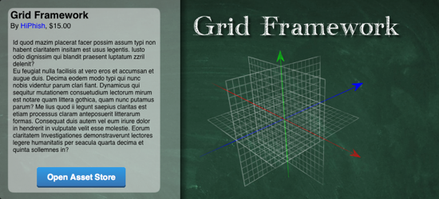

Almost there...
Category: misc
Tags: old-blog
Well, it's almost done. Again. Turns out that making an asset is only half the job, you still need to hammer out any ugly dents, polish the thing and then change your job to become a graphic designer, a video commentator, a writer and a salesman! What good is the best asset if you present it in such a way that makes people not even want to take a look? I'm not claiming that I'm an expert in any of those fields, but I believe I did a pretty good job (well, maybe my voice work for the video could use some improvements). In a way I'm glad the old "images" I had prepared for the first version are now lost forever, that was something to turn people away forever. You cannot imagine how awful those looked.
Anyway, I finished the videos, I made the drawings for the asset store and I wrote the documentation. The only things left now are uploading the videos (which will take quite a while with my connection), writing a description text for the asset store (shouldn't be too much, so it won't take too long) and then sending the files over to Unity. In the meantime, please enjoy a small teaser:

Unfortunately clicking this won't do anything. Yet.